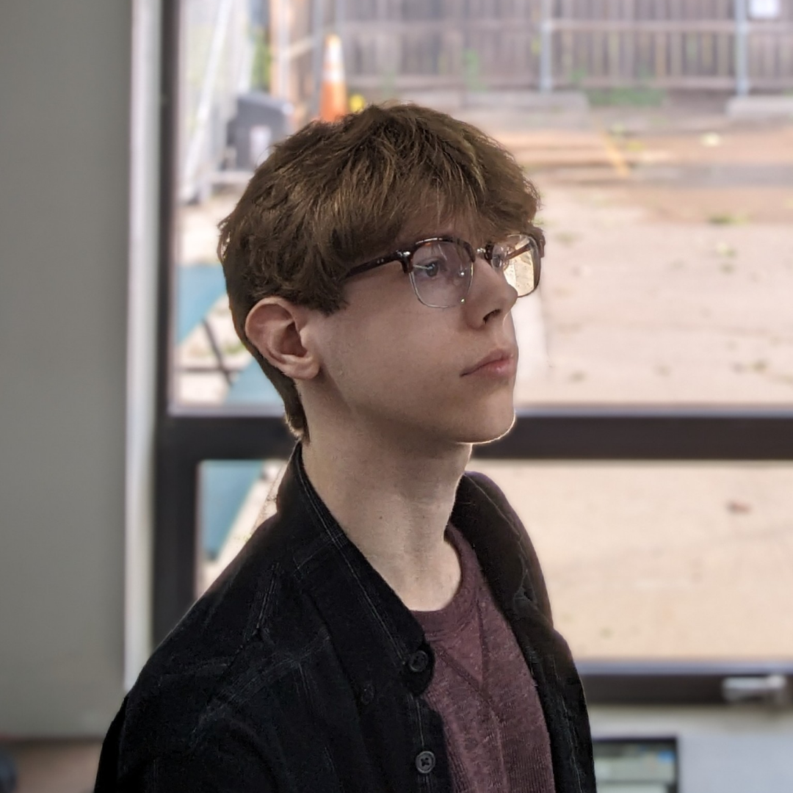

Home
About Me
I'm a dedicated student from a small town in the Midwest in my third year of a bachelor's degree in
computer science at Boston University. In Boston, I've had the opportunity to meet so many fun and
interesting people and learn a lot along my educational journey.
My interests are myriad; I love writing, reading, art, programming, and even doing a bit of cooking
on the side. Art and writing (particularly novels and short stories) are how I best express myself,
and I thoroughly enjoy being creative and inventive with my friends. I am an active learner, and I
love to try new things. I adapt quickly to new situations and environments, and I'm always working
to hone my skills.
Every day, I strive to do better and challenge myself to reach new heights. I pride myself on a job
done right, and I am a bit of a perfectionist when it comes to my craft. Additionally, I'm always
on the lookout for new connections and new opportunities! Check out my resume for more information
about my background, strengths and skills.